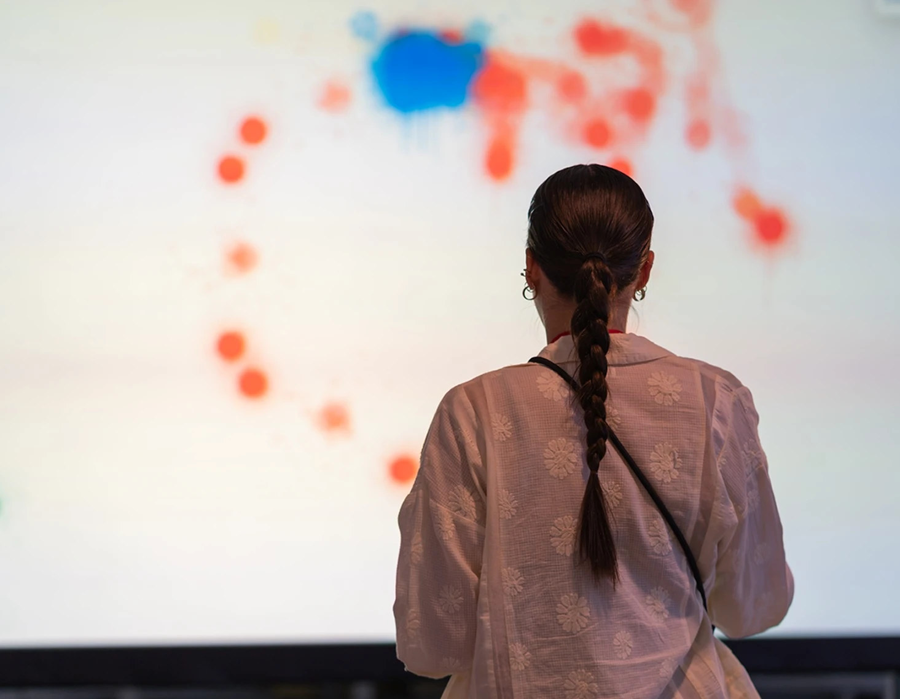
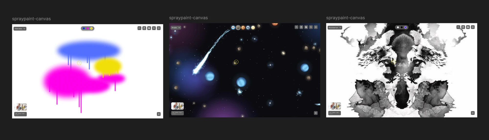
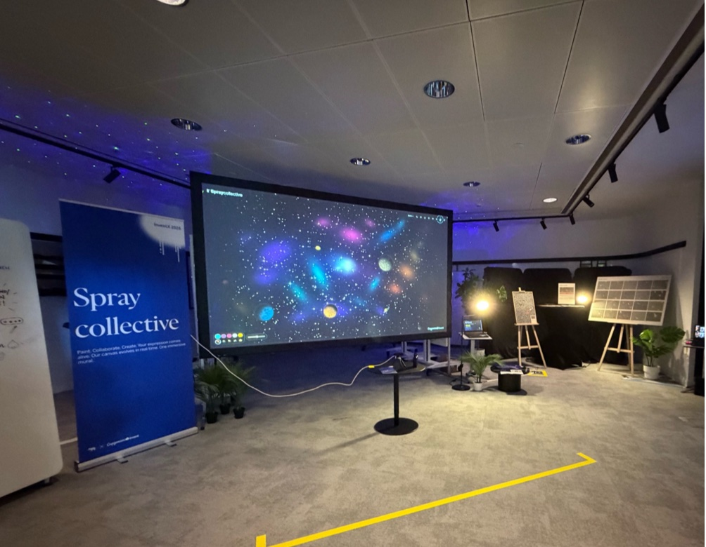
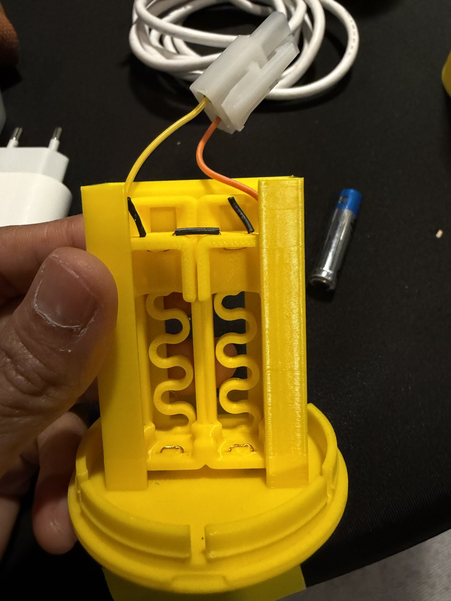
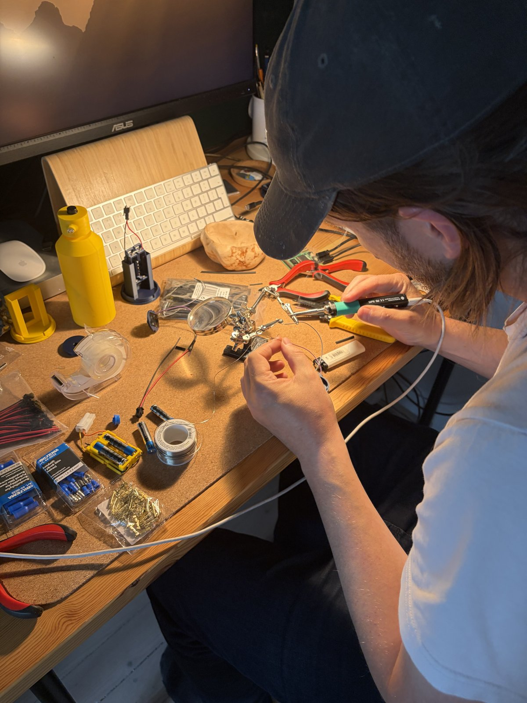
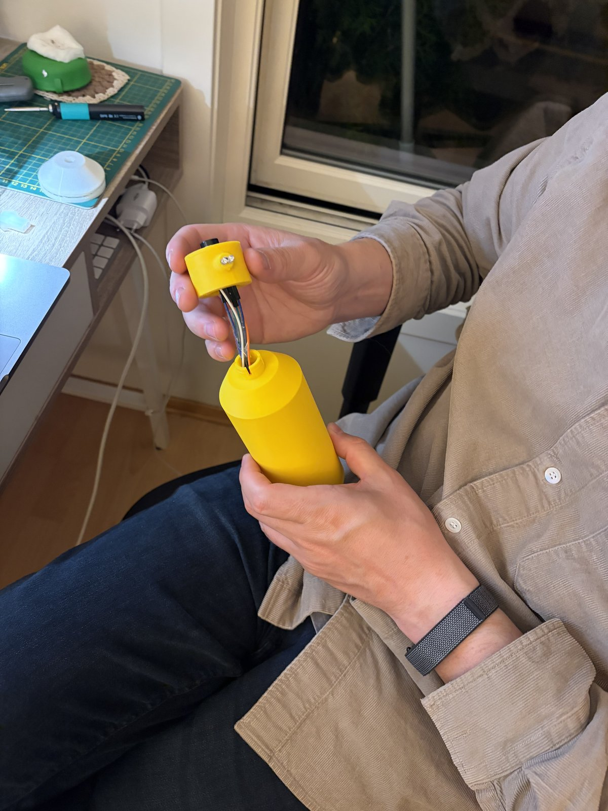
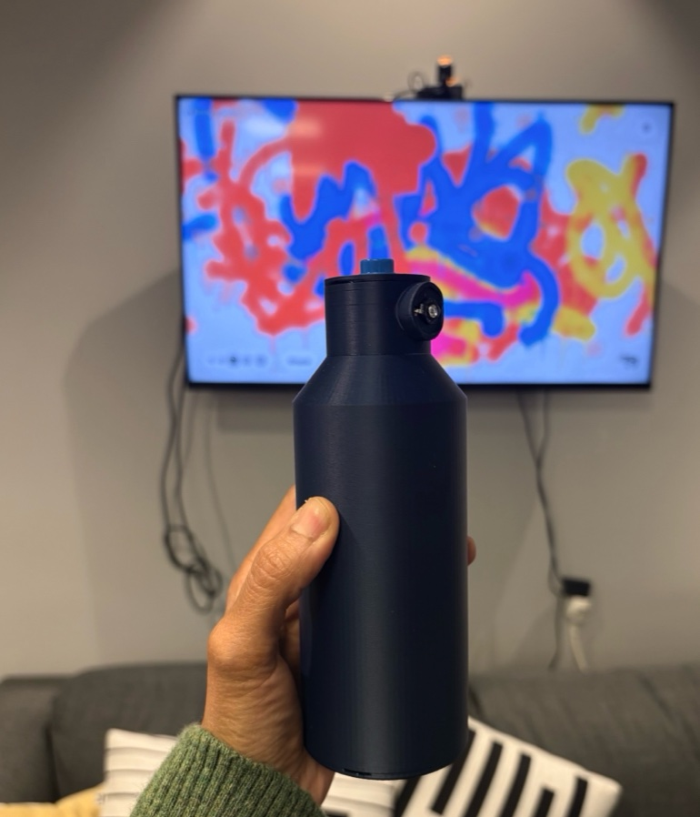
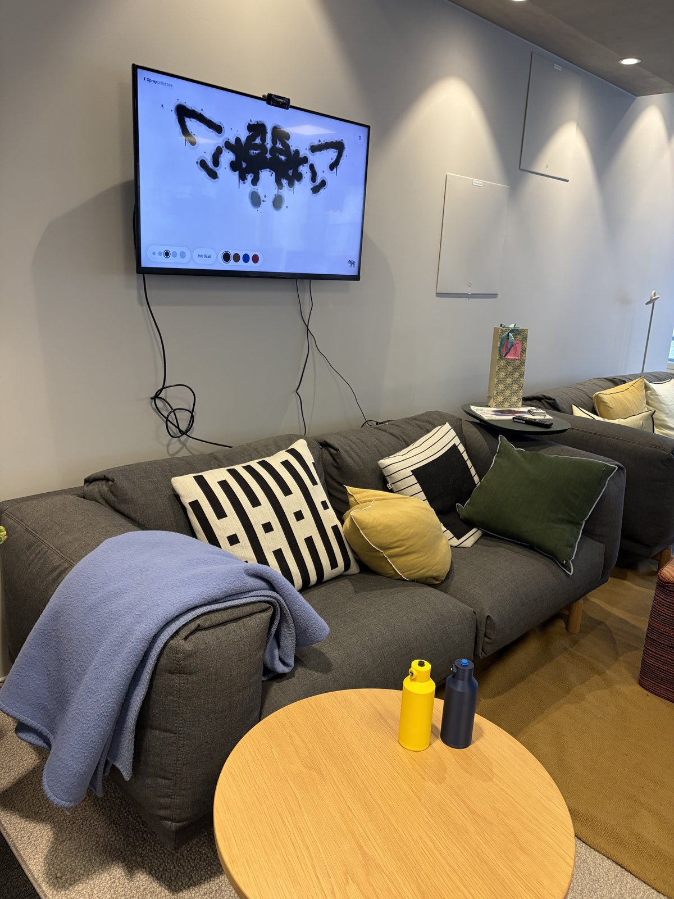
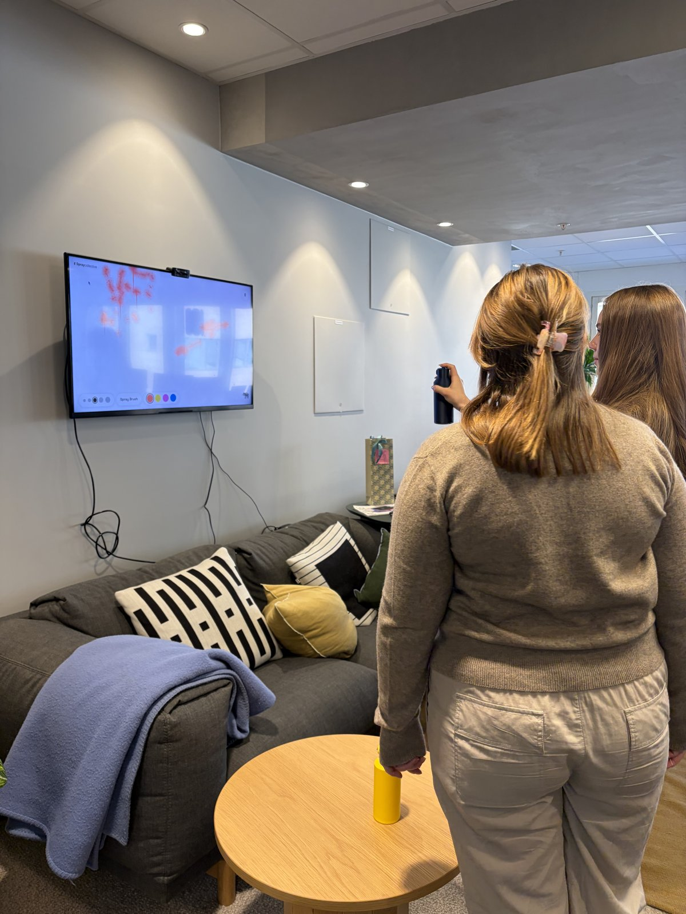
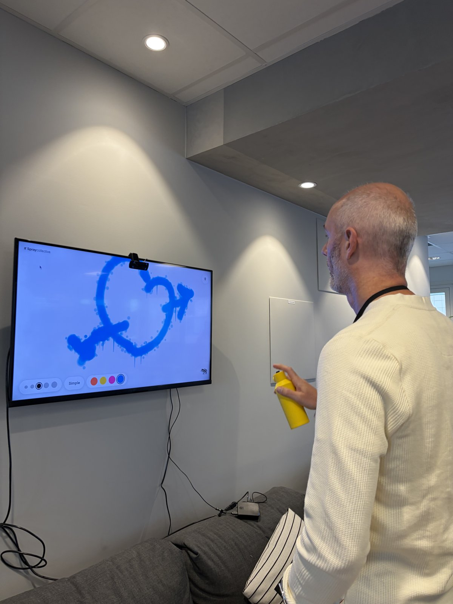

Spray Collective
Immersive installation for InventX
An immersive installation for InventX 2026, where people make the art rather than watch it. Up to four painters share one canvas that responds the moment someone reaches out.
It was built in weeks by a small team across the UK and Norway, and showed what AI can do to turn an idea into something people can touch.

Background
Capgemini Invent wanted an installation that people would make rather than watch. It had to be a shared canvas that responds the moment someone reaches out, supports up to four painters at once, and works for strangers with no briefing.
It also had to be delivered in weeks by a small team spread across the UK and Norway, and show what AI can do to turn an idea into reality.
It was also a chance to bring multisensorial design, spatial experience, interaction design and physical prototyping together in one project. The question at every step was simple: does this feel alive, and does it make you want to move again?
A shared canvas that feels alive the moment a stranger reaches out.

Process
Feeling-led prototyping. Claude Design artifacts served as my sketchbook for rapid prototypes of gestures, colour and canvas responses. Thematic worlds (Space, Underwater, Jungle, Rorschach), Mirror and Kaleidoscope modes and a stencil tool give people reasons to return.
Hands-on, end to end. I designed the experience, the interaction model and the gesture vocabulary, and built, set up and calibrated two versions of the installation for two different settings.

Approach 1: webcam and image detection, for InventX. A webcam and image detection track people’s hands and the spray can props, so anyone can walk up and paint. This version ran at InventX, in the Candy Store of AI experiences, where it needed no wiring, pairing or briefing.

Approach 2: Smart Can with IR tracking, for the frog studio. A 3D-printed Smart Can with sensors for shake, orientation, pressure and haptics carries an LED that an IR camera tracks, running on a Raspberry Pi. Holding a real can makes painting feel physical. I 3D-printed the can and built its electronics, with an engineer helping on the hardware wiring, then set up the Raspberry Pi and IR camera and calibrated the tracking for the studio.







Results
Spray Collective went from idea to live installation in weeks. It was a real success, and people remember the experience.
It also showed how AI can help teams turn an idea into something people can touch and share.
Testing the installation on site and in the studio meant the tracking had to hold up in different rooms and lighting, so calibration became part of the design itself.
The experience continues to evolve, with further development of the Smart Can planned for the studio version.